Chapter 4
Collective geoms
4.5 Exercises
Question 1
Draw a boxplot of hwy for each value of cyl, without turning cyl into a factor. What extra aesthetic do you need to set?
The Figure 1 depicts the boxplot of hwy for each value of cyl, without turning cyl into a factor. The extra factor you need to set is the aesthetic group = cyl .
Code
mpg |>
ggplot(aes(cyl, hwy, group = cyl)) +
geom_boxplot() +
ggthemes::theme_clean() +
labs(x = "Cylinder",
y = "Highway Mileage (miles per gallon)",
title = "Boxplot of hwy for each value of cyl") +
theme(plot.title.position = "plot")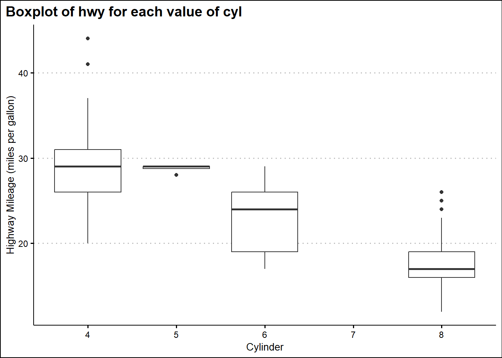
Question 2
Modify the following plot so that you get one boxplot per integer value of displ .
ggplot(mpg,
aes(displ, cty)) +
geom_boxplot()The following code modifies the code and produces one boxplot per integer value of displ. Importantly, we make displ a group aesthetic, so that one box-plot per value of displacement.
Code
ggplot(mpg,
aes(x = displ, y = cty,
group = displ)) +
geom_boxplot() +
ggthemes::theme_hc() +
labs(x = "Displacement (in litres)",
y = "City Mileage (in miles per gallon)")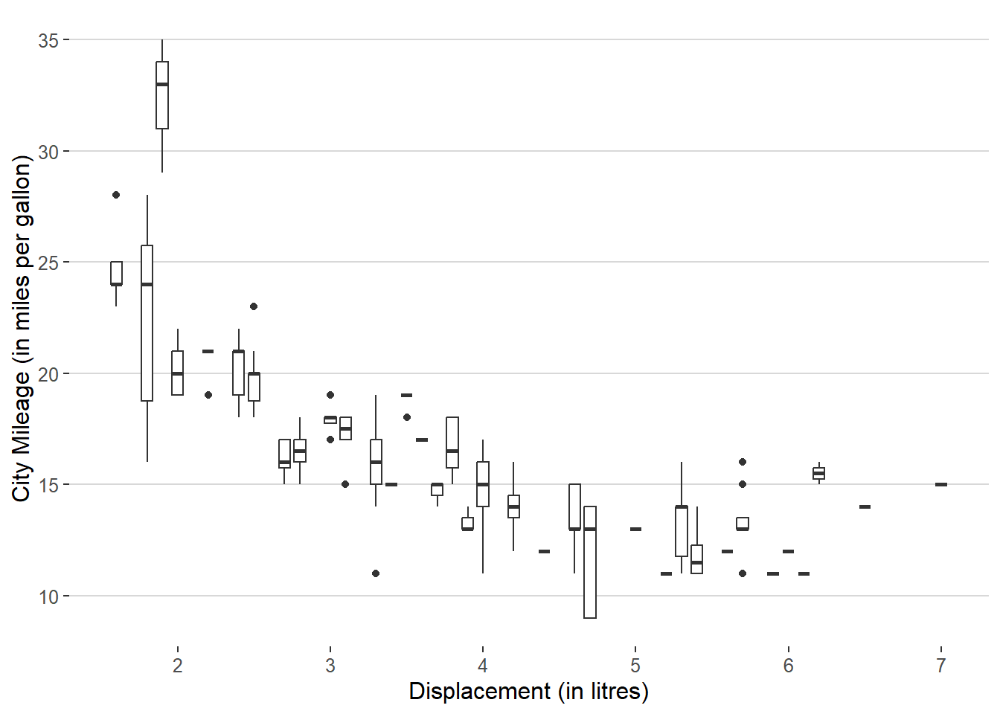
Question 3
When illustrating the difference between mapping continuous and discrete colours to a line, the discrete example needed aes(group = 1). Why? What happens if that is omitted? What’s the difference between aes(group = 1) and aes(group = 2)? Why?
In ggplot2, when dealing with discrete variables or combinations of them in a plot, each one is considered a separate group. So, if we use a discrete variable to set the color (like factor(colour)), ggplot2 creates a distinct line for each group, which corresponds to each separate color. In your case, there’s only one observation for each color, so no lines are drawn, as you can see in Figure 3 (a).
On the other hand, if we set the group = 1, we’re essentially making a new group. This group will include all observations, because the number 1 is just a numeric value and not a grouping variable in the dataset. Consequently, all observations are treated as a single group, and a line is drawn using the color from the previous observation. This means that the line segment from (1,1) going to (2,2) will have the same color as the point (1,1), as demonstrated in Figure 3 (b).
Similarly, if we set the group = 2, we get the same result as in Figure 3 (b) because 2 is another numeric value (just like 1) that is not a variable in the dataset. So, again, all observations are treated as a single group, and the line segment from (2,2) to (3,3) takes its color from the point (2,2), as illustrated in Figure 3 (c).
In both cases (aes(group = 1) and aes(group = 2), the line segments will have the same colours, and the difference is essentially in the numeric identifier used for grouping, which doesn’t affect the final outcome in this context. The purpose of using these numeric values (1 or 2) as the grouping variable is to ensure that all data points are connected in a continuous line with consistent color, regardless of the color mapping in your ggplot2 plot.
Code
# Re-Creating the data frame given in text-book
df <- data.frame(x = 1:3, y = 1:3, colour = c(1, 3, 5))
ggplot(df, aes(x, y, colour = factor(colour))) +
geom_line(linewidth = 2) +
geom_point(size = 5)
ggplot(df, aes(x, y, colour = factor(colour))) +
geom_line(aes(group = 1),
linewidth = 2) +
geom_point(size = 5)
ggplot(df, aes(x, y, colour = factor(colour))) +
geom_line(aes(group = 2),
linewidth = 2) +
geom_point(size = 5)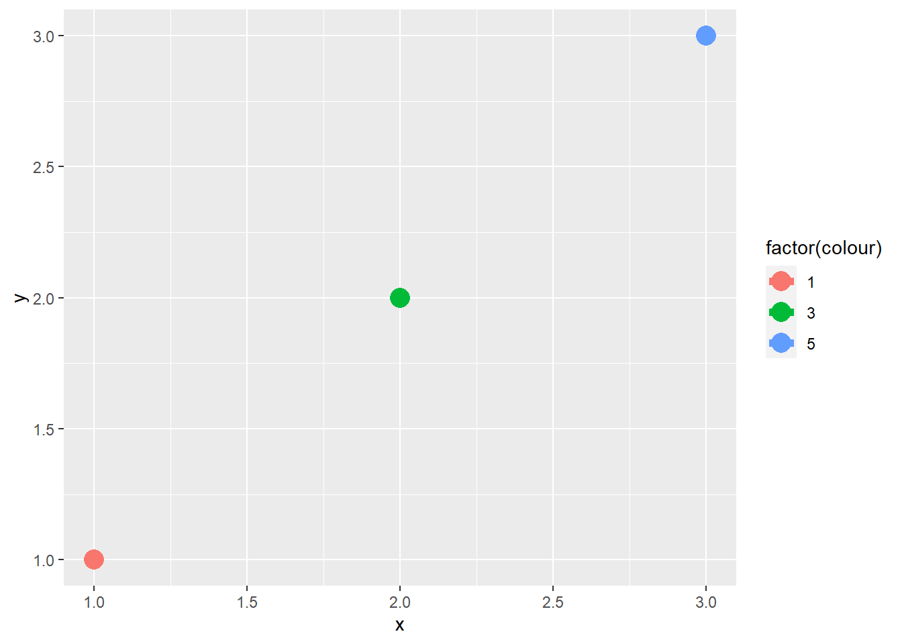

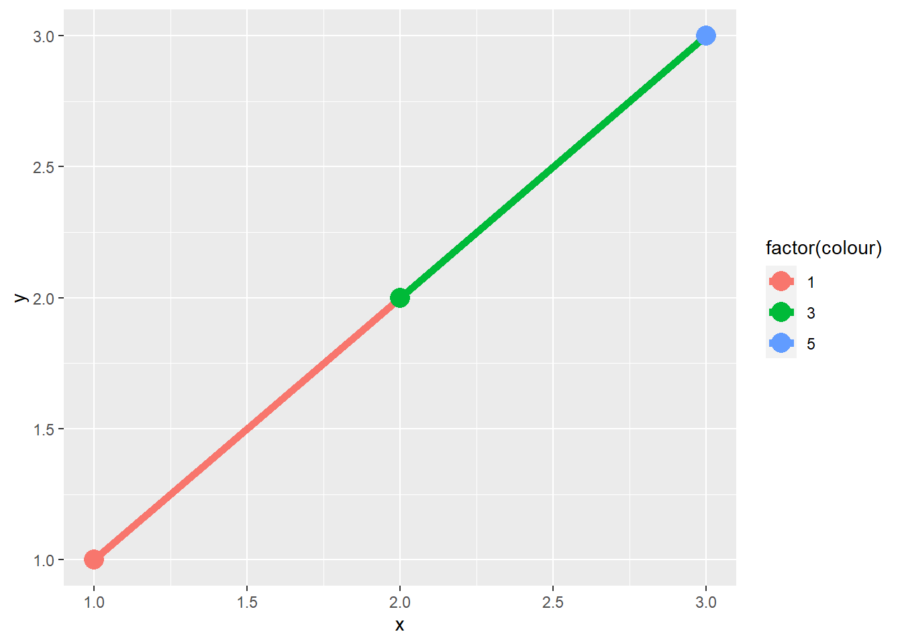
Question 4
How many bars are in each of the following plots?
(Hint: try adding an outline around each bar with colour = "white")
Lets examine each of the plots. The reasoning and answers are given below, and the resulting plots are in Figure 4 .
-
ggplot(mpg, aes(drv)) + geom_bar()This plot should produce as many bars as there are values/levels of
drv.Thus, this plot should produce 3 bars [n_distinct(mpg$drv)] The reason is thatdrvis the only aesthetic, and it is a discrete variable, so geoms are automatically grouped by the discrete variable. The resulting plot is in Figure 4 (a) . -
ggplot(mpg, aes(drv, fill = hwy, group = hwy)) + geom_bar()This plot should produce stacked bar-plot of up-to 3 X 27 = 81 bars. That is, total 3 bar plots (one for each level of discrete variable
drv), each bar containing up-to 27 smaller bars (one for each value of the group aestheticgroup = hwy. The number 27 comes fromn_distinct(mpg$hwy). However, some values ofhwymay be missin for each level ofdrv. Thus, the actual number of bars within the 3 stacked bar-plots will be 46 [nrow(count(mpg, drv, hwy))]. The color of the bars will be along a sequential colour palette since ggplot2 will treat the variable hwy as a continuous variable, and thus plot colours in a continuum sequence. The resulting plot is shown in Figure 4 (b) . To make it easier to vizualize the number of stacks, the white outlined plot is shown on Figure 5 (b) . -
ggplot(mpg2, aes(drv, fill = hwy, group = id)) + geom_bar()This code should now produce 234 [
n_distinct(mpg2$id)] different small bars stacked into 3 big bars - one for eachdrvcategory. Each small bar will represent an observation, and its colour will depend on the value ofhwyfor the observation, and that too in ascending order. This is because while allottingidyou had arranged the observations in ascending order ofhwy. The Figure 4 (c) shows the plot. Since the colour changes are too frequent, an easier visualization showing number of stacks is in Figure 5 (c).
Code
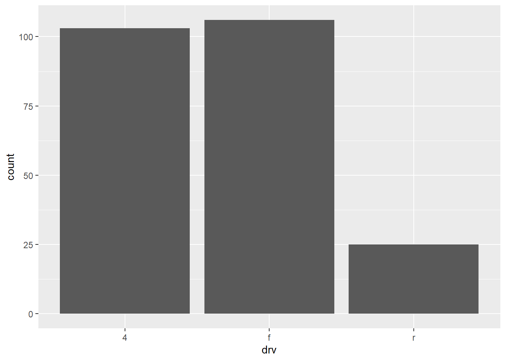
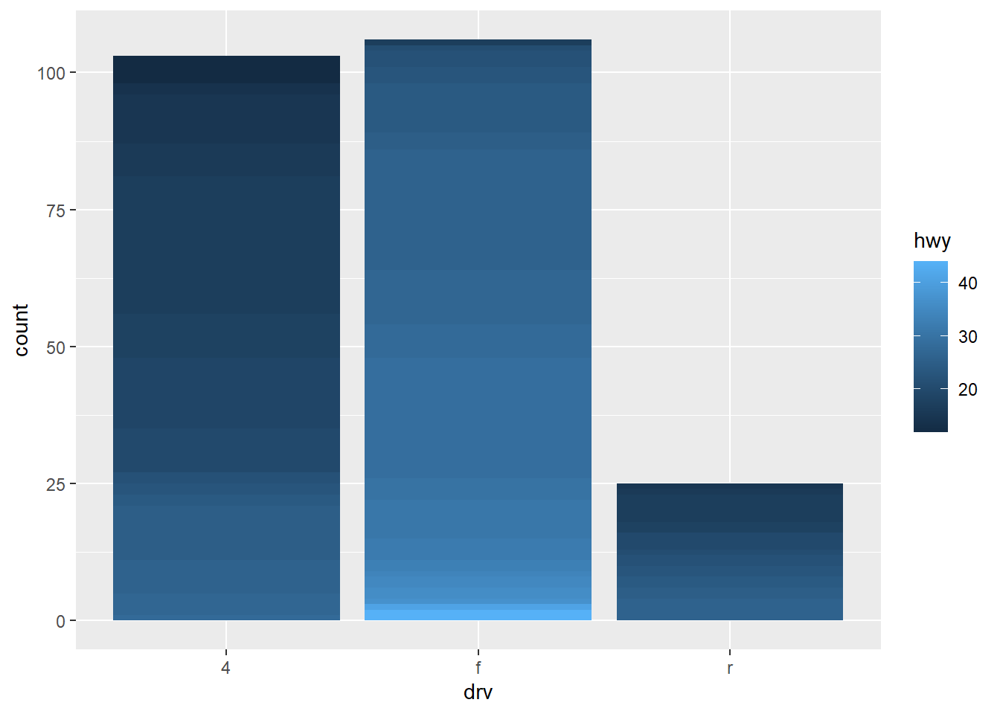

Code
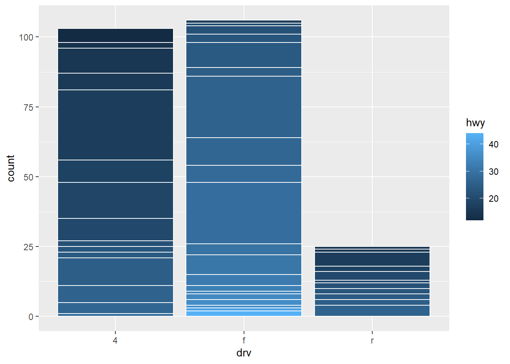
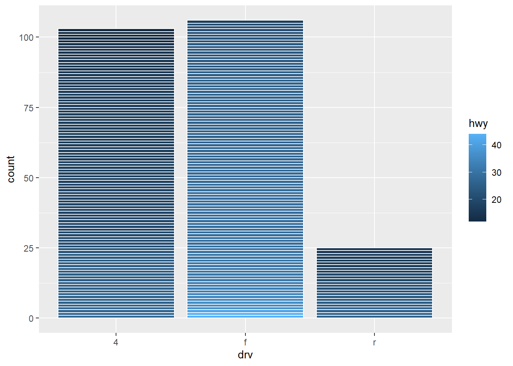
Question 5
Install the babynames package. It contains data about the popularity of baby names in the US. Run the following code and fix the resulting graph. Why does this graph make us unhappy?
library(babynames)
hadley <- dplyr::filter(babynames, name == "Hadley")
ggplot(hadley, aes(year, n)) +
geom_line()Once you run the code, you can see a saw-toothed graph shown in Figure 6 (a). To detect the problem, we can plot a scatter-plot where we see some observations lie very close to azero. These ust be of a separate sex. The scatter plot is in Figure 6 (b) . Finally, the corrected code is one where we add the group and/or color aesthetic mapped to variable sex which produces the correct plot in Figure 5 (c) .
The graph might make one unhappy because the name “Hadley” has been falling in popularity over time.
Code
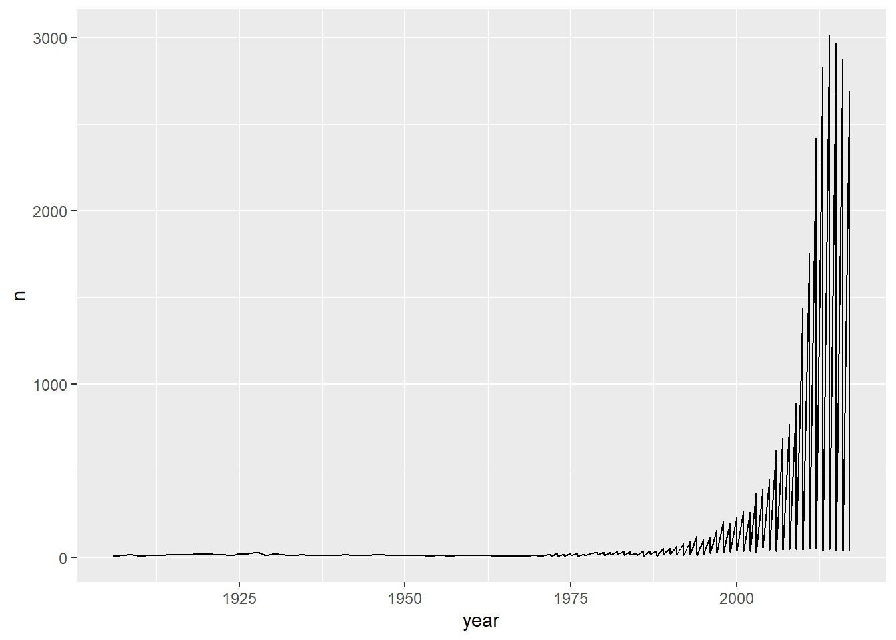
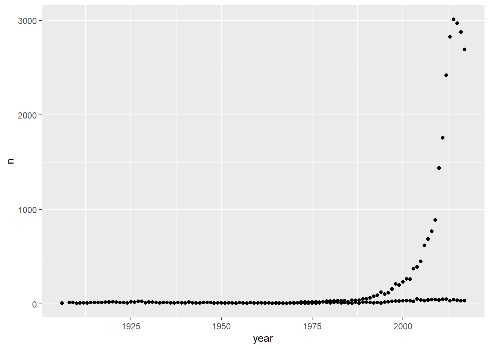
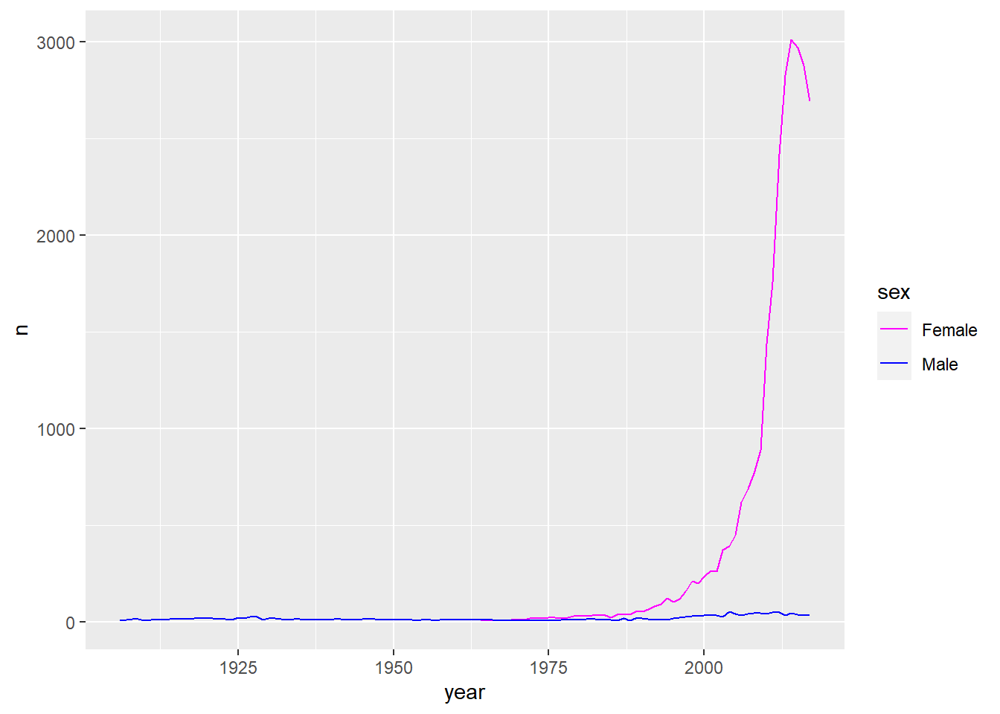